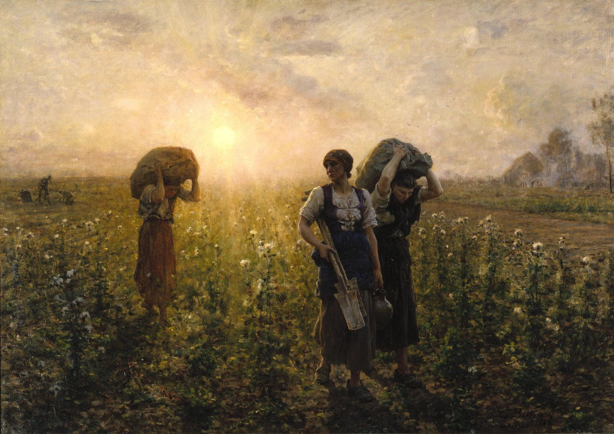

O Naturalismo é um movimento literário que surgiu no século XIX como uma extensão do Realismo, buscando retratar a realidade de maneira objetiva e detalhada, muitas vezes enfocando aspectos mais brutos e críticos da condição humana.

Autores usaram teorias científicas, como o determinismo, para moldar características de personagens, destacando influências raciais e contextuais.
Características biológicas foram priorizadas sobre aspectos psicológicos, resultando em "zoomorfização" e exploração da sexualidade instintiva dos personagens.
Obras revelam preconceitos, retratando mulheres com sexualidade patológica, negros como inferiores e homossexualidade como desvio da norma.